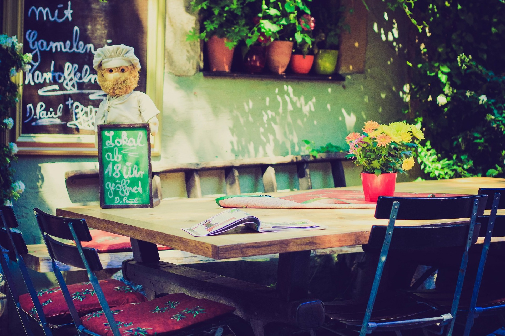
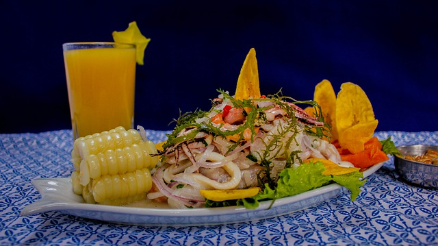
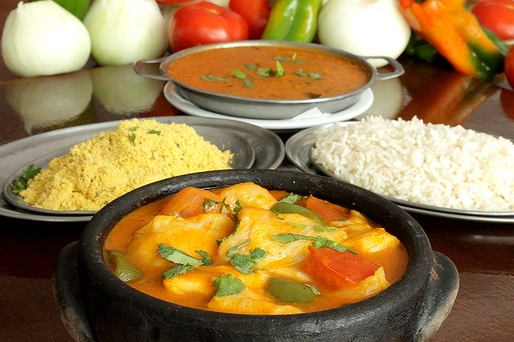

Lima – Peru (América do Sul)

Ceviche(imagem), pratos que reúnem produtos típicos da Amazônia Peruana, experiências de imersão na cultura gastronômica local… um dos países mais marcantes quando o assunto é turismo gastronômico, o Peru conta com 3 restaurantes que já se destacaram por entrar na lista dos 50 melhores restaurantes do mundo, todos localizados na capital Lima. Muito além das belezas de Macchu Picchu e de Cuzco, um roteiro de viagem ao Peru não pode deixar de incluir a experiência da cozinha local. Em Lima, vá ao imperdível restaurante Central, que proporciona uma verdadeira viagem gastronômica que contempla os diferentes ecossistemas peruanos. Não deixe, ainda, de provar a culinária de influência asiática que mistura técnicas peruanas de preparo e a adição de ingredientes da região. Por fim, o passeio na capital só fica completo com a visita ao Astrid & Gaston, que conta com um ceviche inesquecível no menu.
Região Nordeste - Brasil

Todos os estados do nordestinos tem litoral, então já dá para imaginar que os frutos do mar e os peixes estão em peso na culinária nordestina, né?!
O tempero é outra grande marca dos pratos típicos dos estados do nordeste (você com certeza já ouviu falar ou provou o azeite de dendê!).
Para quem quer conhecer os pontos principais da culinária nordestina, a Bahia é o destino perfeito. Na capital, Salvador, você encontra uma mistura dos pratos mais típicos do estado.
Para experiências diferentes, Alagoas, além da culinária comum, é muito famosa por oferecer carnes de búfalo e avestruz.
Pernambuco merece destaque no seu roteiro gastronômico pelo Brasil.
O Estado é o terceiro polo gastronômico brasileiro e tem muitas opções de pratos, receitas e misturas que pegam um pouquinho de cada ingrediente e montam refeições incríveis, que fazem sucesso entre os visitantes.

2020 MULTI VIAGENS - TODOS OS DIREITOS RESERVADOS